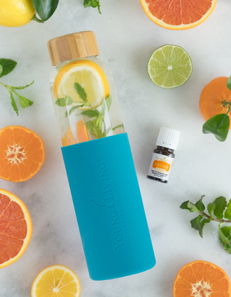

Az esszenciális olajak nagyban hozzájárulnak az általános jó közérzetünkhöz, az egészséges mindennapjainkhoz. Ezt akkor fogod igazán érezni, ha elkezded használni és rájössz, hogy akár milyen megoldandó feladat kerül eléd, lesz olaj, amihez nyúlj.
Legyen szó:
A YL + jelöléssel ellátott, Vitality™ olajait egész nyugodtan alkalmazhatod belsőleg. Néhány az olajak közül már Európában is megkapta az étrendkiegészítő minősítést. Az Egyesült Államokban ezek száma már jóval magasabb, mi egyenlőre be kell érjük az alábbiakkal:
Tegyél egy -két csepp olajat a napi folyadékodba, lehetőség szerint vízbe vagy gyógynövény teába és élvezd a kellemes ízt és tapasztald meg a jótékony hatását.
Ha szeretnél többet tudni a belsőleg használható olajokról, jelentkezz be egy ingyenes illatkóstolóra, melyet 3 főtől akár a saját otthonodban is megtarthatsz. Lehet ez egy különleges fénypontja egy baráti összejövetelnek, egy családi eseménynek.
Számos YL esszenciális olajat használhatunk belsőleg, táplálék-kiegészítésként is. Ahogy fent említettem, lehet a folyadékunk ízesítője, de tehetjük kapszulába is. Javaslom, ha még nincs saját tapasztalatod, konzultáljunk! Belső használatkor mindig igyunk több vizet a megszokottnál, így támogatjuk a méreganyagok távozását. Ellenkező esetben csak keringeni fognak a szervezetben és azok csupa kellemetlenséget okoznak :).
Copyright © All rights reserved | This template is made with by Colorlib